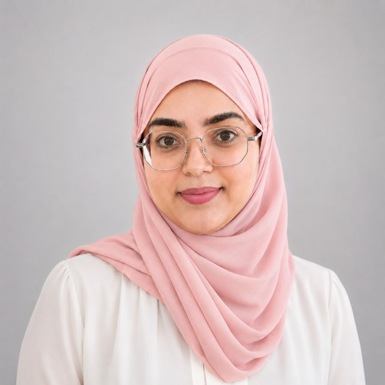

Sahar Hafsi
PhD Candidate in Artificial Intelligence & Data Analysis — bioinformatics, biomedical signal processing, and machine learning for neurodegenerative disease detection.
News
Recent updates
- 06/2026 — Paper on spontaneous blink features for Parkinson's classification accepted at the ACM Symposium on Eye Tracking Research & Applications (ETRA 2026).
- 2025 — Presented the Pursuit Regularity Index for Parkinson's detection via videonystagmography at EUSIPCO 2025.
- 2025 — Published work on the fusion of sustained vowel descriptors for Parkinson's classification with SciTePress.
- 10/2024 — Joined the Signals & Smart Systems Laboratory (L3S) at ENIT as a Machine Learning Engineer, working on multimodal biomedical biomarkers.
Profile
About
I'm a PhD candidate working at the intersection of artificial intelligence and clinical neuroscience, jointly hosted by the National School of Engineering of Tunis (ENIT) and Université Paris Cité. My research turns biological and neurological signals — voice recordings, eye-movement traces, and video — into early, objective indicators of neurodegenerative disease.
I build machine learning and deep learning pipelines that extract clinically meaningful features from raw signals: acoustic biomarkers from sustained vowels and speech, saccades and fixations from eye-tracking recordings, and multimodal cues from video. My work sits within the Signals & Smart Systems research laboratory (L3S) at ENIT, in collaboration with the Neurology Department of Razi Hospital.
Before my PhD, I trained in bioinformatics and molecular biology, which is where my interest in bridging wet-lab biology and computational methods began. I now work primarily in Python, with experience across cloud-based AI environments including Oracle and Azure.
- Current
- PhD Candidate, AI & Data Analysis · ENIT & Université Paris Cité
- Focus
- Speech & ocular biomarkers for Parkinson's disease
- Lab
- Signals & Smart Systems (L3S), ENIT
- Location
- Tunis, Tunisia
- Languages
- Arabic (native) · French (bilingual) · English (fluent)
Research
Focus areas
Speech Biomarkers
Extracting acoustic features — MFCC, PLP, jitter, shimmer, voice harmonics — from sustained vowels and connected speech to classify Parkinsonian dysphonia and dysarthria.
Ocular Movement Analysis
Detecting saccades, fixations, pursuit regularity, and Square Wave Jerks in eye-tracking and videonystagmography recordings for oculomotor screening.
Applied ML & Multimodal AI
Designing classification pipelines, computer vision models, and multimodal fusion methods that combine video, audio, and signal data for clinical prediction tasks.
Education
Academic path
Experience
Positions & internships
- Speech analysis for the extraction of biomedical biomarkers
- Design and development of machine learning models for classification tasks
- Application of computer vision and video analysis techniques for multimodal data processing
Early detection of neurodegenerative disorders by analyzing vocal features using supervised machine learning algorithms.
Publications
Papers
-
2026Spontaneous Blink Features Extracted from Video for Multi-Class Classification of Parkinson's DiseaseACM Symposium on Eye Tracking Research & Applications
-
2025Pursuit Regularity Index for Parkinson's Disease Detection via VideonystagmographyEUSIPCO 2025, European Association for Signal Processing (EURASIP)
-
2025Automatic Classification of Parkinson's Disease Through the Fusion of Sustained Vowel DescriptorsSciTePress
-
2023MFCC-Based Analysis of Vibratory Anomalies in Parkinson's Disease Detection using Sustained VowelsInstitute of Electrical and Electronics Engineers (IEEE)
-
2023Parkinson's Disease Classification from /a/ Vowel: A Two Databases Comparison StudyInstitute of Electrical and Electronics Engineers (IEEE)
-
2023Dysarthria and Eye Movement Alteration in Parkinson's Disease: Clinical and Neurophysiological BiomarkersJournal of the Neurological Sciences (JNS)
-
2023Detection of Parkinsonian Dysphonia: Relevance of Voice Harmonics MeasurementSignal and Image Processing Research Group (GRETSI)
Projects
Selected work
Ocular Movement Detection for Parkinson's Disease
An automated pipeline to detect saccades, fixations, and Square Wave Jerks in eye-movement recordings, enabling early screening of Parkinsonian oculomotor impairments.
Speech-Based Dysphonia Classification Tool
A machine-learning system for Parkinson's disease detection from voice recordings, extracting acoustic biomarkers (MFCC, PLP, jitter, shimmer) and training classifiers for speech-based diagnosis.
Image Classification & Computer Vision
Deep learning models for image-based classification tasks, covering preprocessing, feature extraction, and model optimization.
Big Data Pipeline
A distributed data processing pipeline for large-scale analytics, with ETL workflows and fault-tolerant computation using Docker, Hadoop, and Spark.
Cloud Computing — Virtualization under Linux
Deployed and managed a KVM-based virtual machine environment, evaluating performance and resource allocation strategies.
Skills
Technical toolkit
Programming
Bioinformatics tools
Data, cloud & infrastructure
Areas of expertise
Credentials
Certificates & languages
NVIDIA Deep Learning Institute
Fundamentals of Deep Learning · Building Transformer-Based NLP Applications · Evaluation and Light Customization of Large Language Models
Oracle University
AI Foundations Associate · Data Science Professional · Database Services Professional
Udemy
Basics & Fundamentals of Cloud Computing · API Management for Generative AI in Azure · Azure DevOps CI/CD Pipelines · Data Analytics, Data Storage, Data Mining and Data Visualization Big Data Technologies
OpenClassrooms
1D Signal Processing and Analysis · Computer Vision Certificate
English proficiency
English Proficiency Test, Arizona State University — 98% · EF SET Certificate — C1 Advanced
Other
Certificate of Informatics and Internet (C2I) · First Aid Certificate, Croissant Rouge Tunisien (CRT)
Arabic
Native
French
Bilingual
English
Scientific, fluent
German
Basic level